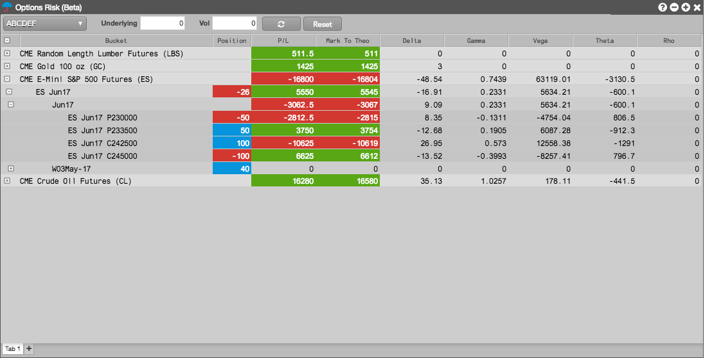

The Options Risk widget displays your open position in the options contracts and underlying futures contracts for a product on a per account basis. The widget shows the current position and Greek calculations at spot price. It also allows the position to be viewed for user-defined scenarios based on adjustments to the underlying instrument price or adjustments to global volatility.

Using the Options Risk widget, you can quickly manage options positions by opening an order entry widget for the underlying future using the right-click context menu. You can also use the context menu to submit a manual fill or modify an SOD for an options or futures instrument displayed in the widget.
To open the Options Risk widget, click Widgets in the workspace title bar and select Options | Options Risk
.